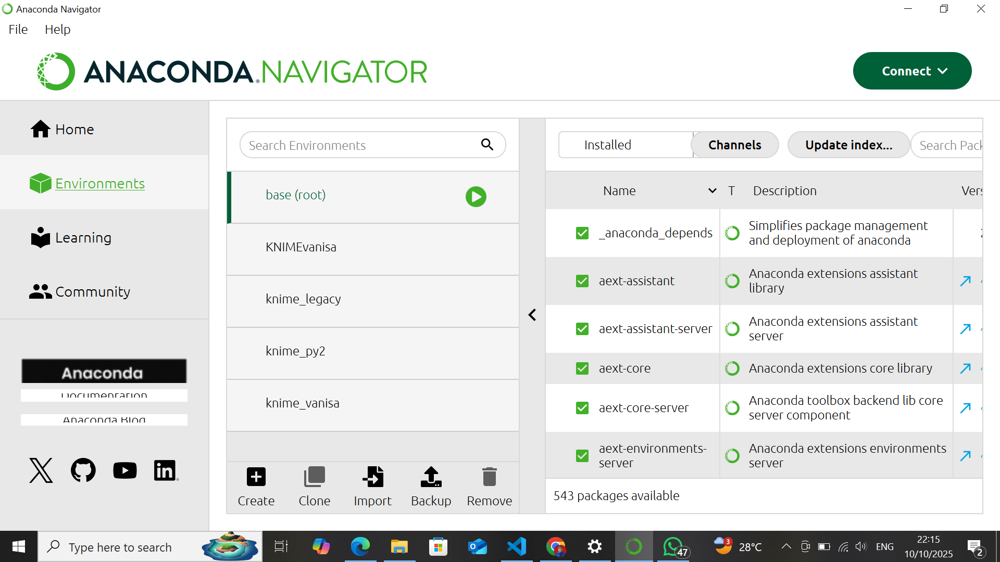
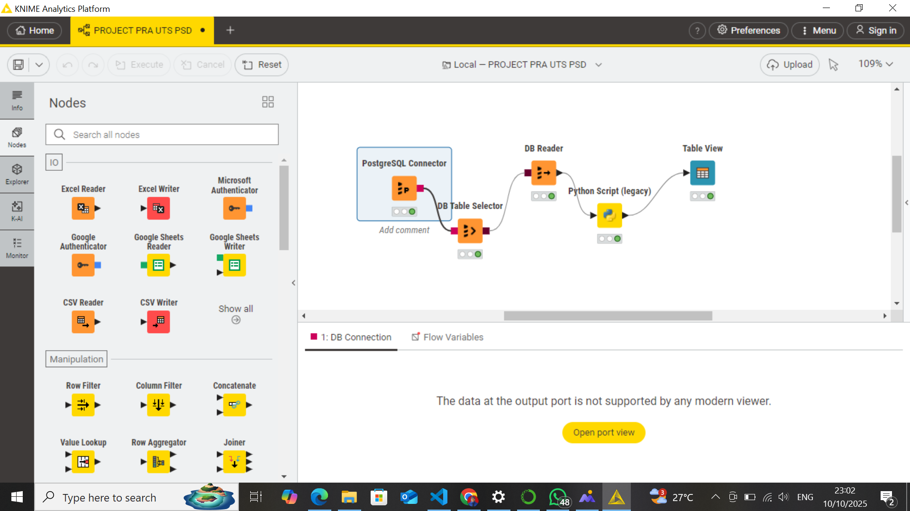
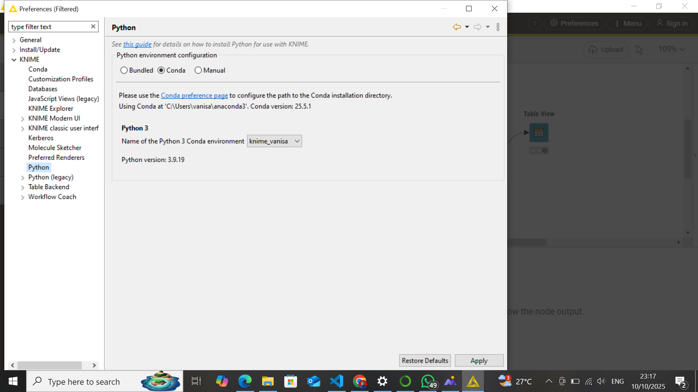
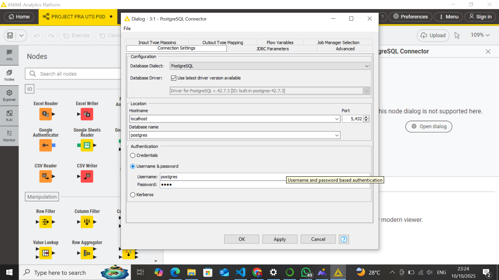
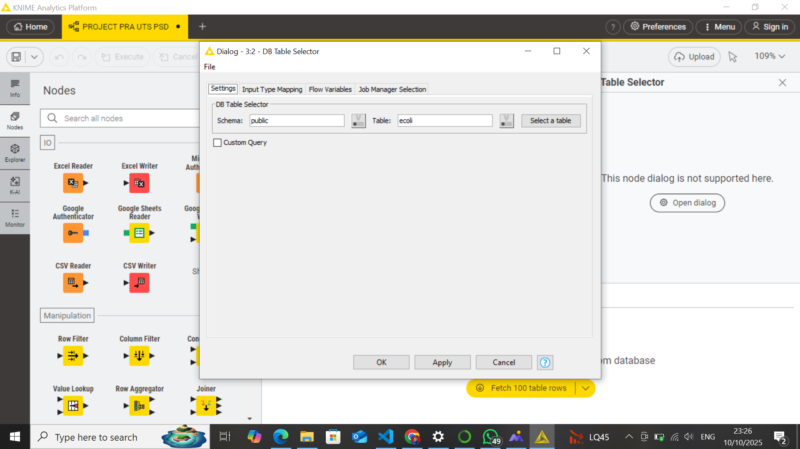
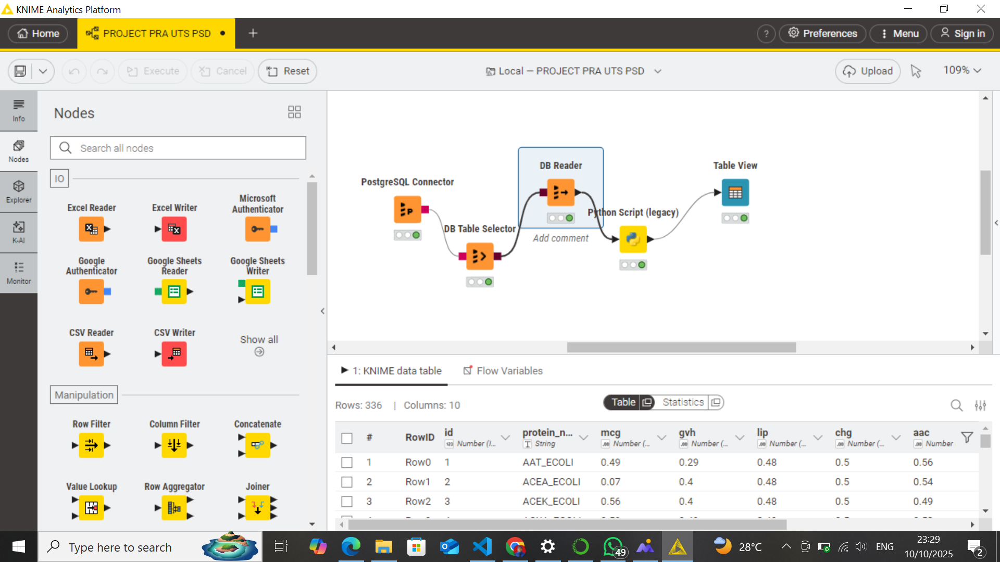
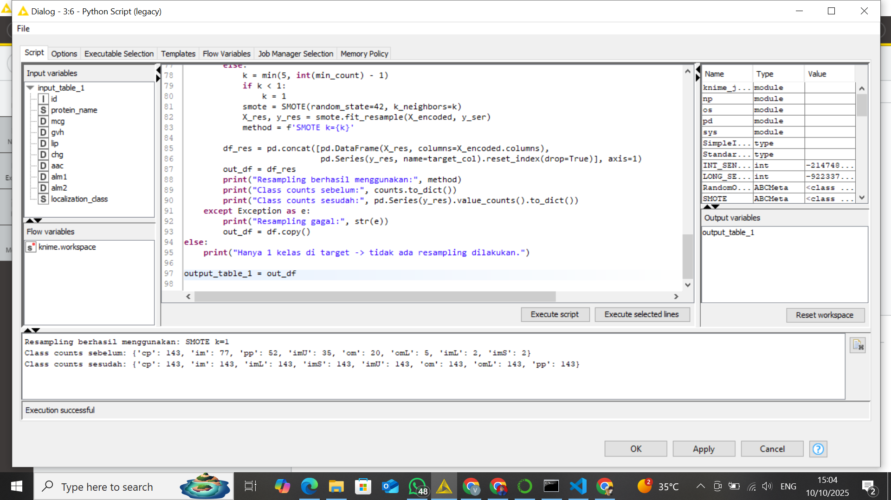
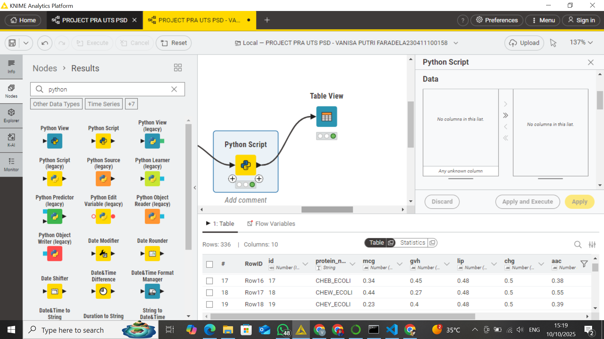

KLASIFIKASI DATA MENGGUNAKAN KNIME - PROJECT PRA UTS#
Pada project Pra UTS, ini saya akan memberikan langkah-langkah dalam penggunaan tools Knime untuk penarikan data dari PostgreSQL. Prosesnya meliputi, Penyambungan database Postgres ke Knime, Pembacaan data, Pemrosesan missing value, outlier, dan unbalanced data menggunakan script python.
Langkah-Langkah Pemrosesan#
Menyiapkan Tools#
Sebelum memulai pemrosesan, maka saya akan mengunduhtools yang diperlukan
1. Python#
Python ini yang akan digunakan untuk membantu analisis data menggunakan script. kalian bisa download python minimal versi 3.9 di link resmi berikut https://www.python.org/downloads/
2. Anaconda#
Anaconda ini diinstal untuk digunakan sebagai manajer environment agar pengelolaan library Python lebih mudah dan tidak konflik antar proyek. kalian bisa download anaconda di website berikut https://www.anaconda.com/download
3. Knime#
KNIME digunakan untuk visualisasi workflow analisis data tanpa banyak coding, tapi bisa diintegrasikan dengan Python dan SQL. Disini pemrosesan data nya akan dilakukan oleh node-node yang saling terhubung.
PostgreSQL postgres inilah yang bertugas menyimpan data yang akan diproses di knime.
Setelah itu, jangan lupa untuk melakukan instalasi pada setiap tools diatas.
Instalasi Environment Anaconda#
Setelah di download, perlu melakukan instalasi environment di anaconda. Hal ini juga dilakukan untuk untuk dapat disambungkan dengan tools Knime nantinya. Buka prompt anaconda untuk melakukan instalasi environment.
conda create -n knime_legacy python=3.8 Masukkan perintah di atas untuk membuat environment dengan nama knime_legacy. pastikan Knime sudah di instal ya
conda activate knime_legacy masukkan perintah ini di prompt anaconda untuk dapat mengaktifkan environment knime nya. ketika environment berhasil dibuat, di bagian kiri akan muncul environment nya di prompt
pip install pandas numpy matplotlib scikit-learn scipy ini perintah instalasi library agar dapat digunakan di script python yang akan dijalankan di knime.
Hasil dari instalasi dan penyambungan ke knime yang saya punya adalah sebagai berikut :

Instalasi Ekstension Knime#
Dengan menggunakan knime, kita dapat mengolah data dari database, salah satu nya postgres. Data tersebut dapat dibaca isi datanya, ditampilkan isi tabel nya, diolah menggunakan script seperti python, dan masih banyak lagi. Berikut ini tampilan nodes-node yang sudah disusun dan dihubungkan untuk proses data kali ini

Untuk dapat menjalankan script python, ada beberapa ekstensi yang harus di atur, termasuk agar dapat tersambung dengan anaconda nya. Langkah-langkahnya adalah sebagai berikut:
Install Python Kita perlu menginstal python di Knime agar dapat dijalankan scriptnya. Pada navbar di atas tampilan, terdapat pilihan “menu”. Klik dan pilih “Install Extensions”. Lalu, cari python dan centang ketiga rekomendasi python conda dan legacy yang berada paling atas. Kemudian close dan apply.
Memastikan Conda Terhubung dengan Knime Untuk memastikannya, pilih “preferences” pada nabar. Di bagian conda akan tampil versi conda yang berhasil terhubung
Memastikan Python dan Python Legacy Terhubung denga Knime Pastikan kalian memilih python 3 sebagai environment configuration. Lalu, pilih nama environment yang sudah kalian buat. Kemudian Apply dan close

Susun Node pendukung
a. Untuk node pertama, disini saya menggunakan node PostgreSQL connector untuk menghubungkan data ecoli yang saya simpan di postgres, sehingga data tersebut dapat diakses knime. Dengan memasukkan hostname, nama database, dan password postgres, data ecoli di postgres akan terhubung ke knime

b. Selanjutnya, saya menghubungkan dengan node DB Table. node ini berfungsi untuk menampung metadata query sebelum dibaca oleh knime. Isi schema dan nama table data sesuai dengan yang ada di postgres.

c. Kemudian, saya menghubungkan dengan DB Reader yang dungsinya untuk mengeksekusi query dari DB Table Selector dan mengambil data hasilnya ke dalam format KNIME table.

d. Selanjutnya, menghubungkan node Script Python atau Script Python Legacy. Node inilah yang akan menjalankan script python untuk memproses missing value, outlier, dan unbalanced data.
e. Terakhir, ada node table view. setelah python dijalankan hasil nya akan terlihat ketika table view di run.
Dibawah ini adalah script python yang ada di knime


import pandas as pd import numpy as np from sklearn.preprocessing import StandardScaler from sklearn.impute import SimpleImputer from imblearn.over_sampling import SMOTE
df = input_table_1.copy()
target_col = ‘target’
X = df.drop(columns=[target_col])
y = df[target_col]
imputer = SimpleImputer(strategy=’mean’) X_imputed = pd.DataFrame(imputer.fit_transform(X), columns=X.columns)
Q1 = X_imputed.quantile(0.25) Q3 = X_imputed.quantile(0.75) IQR = Q3 - Q1
lower_bound = Q1 - 1.5 * IQR upper_bound = Q3 + 1.5 * IQR
X_winsorized = X_imputed.clip(lower=lower_bound, upper=upper_bound, axis=1)
scaler = StandardScaler() X_scaled = scaler.fit_transform(X_winsorized)
smote = SMOTE(random_state=42) X_resampled, y_resampled = smote.fit_resample(X_scaled, y)
df_resampled = pd.DataFrame(X_resampled, columns=X.columns) df_resampled[target_col] = y_resampled
print(“Jumlah data sebelum SMOTE:”) print(y.value_counts()) print(“\nJumlah data sesudah SMOTE:”) print(pd.Series(y_resampled).value_counts())
output_table_1 = df_resampled
Penjelasan Kode
Dalam proses ini, langkah pertama yang dilakukan adalah mengimpor berbagai pustaka Python yang diperlukan. Pustaka yang digunakan antara lain pandas dan numpy untuk membantu dalam manipulasi serta perhitungan data numerik, SimpleImputer untuk mengatasi nilai-nilai kosong, StandardScaler untuk menormalkan skala data, serta SMOTE untuk menangani permasalahan ketidakseimbangan kelas pada dataset.
Setelah seluruh pustaka diimpor, data dari node KNIME dimasukkan ke dalam variabel df. Proses ini dilakukan dengan menyalin data input agar tidak terjadi perubahan pada data asli yang digunakan di KNIME. Selanjutnya, kolom target ditentukan melalui variabel target_col, sementara data fitur disimpan ke dalam variabel X. Pemisahan ini penting karena proses transformasi data seperti imputasi, normalisasi, maupun penanganan outlier hanya akan diterapkan pada fitur, bukan pada kolom target.
Tahap berikutnya adalah penanganan missing value. Pada proses ini, digunakan teknik Simple Imputation dengan strategi rata-rata (mean). Artinya, setiap nilai kosong pada kolom numerik akan digantikan dengan nilai rata-rata kolom tersebut. Pendekatan ini umum digunakan karena sederhana dan mampu menjaga distribusi data tetap stabil.
Setelah nilai-nilai kosong berhasil digantikan, langkah selanjutnya adalah penanganan outlier menggunakan metode Interquartile Range (IQR). Metode ini bekerja dengan menghitung kuartil pertama (Q1) dan kuartil ketiga (Q3), lalu menentukan batas bawah dan atas. Setiap nilai yang berada di luar rentang tersebut dianggap sebagai outlier dan akan disesuaikan menggunakan metode winsorizing, yaitu membatasi nilai ekstrem agar tetap berada di dalam batas yang telah ditentukan. Dengan cara ini, data ekstrem tidak dihapus, melainkan “dipotong” sehingga tidak memengaruhi distribusi secara berlebihan.
Selanjutnya, dilakukan proses standardisasi data menggunakan StandardScaler. Langkah ini bertujuan agar setiap fitur memiliki skala yang seragam — dengan nilai rata-rata nol dan standar deviasi satu. Standardisasi penting dalam banyak algoritma pembelajaran mesin, terutama yang sensitif terhadap skala fitur seperti KNN, SVM, dan PCA.
Setelah data bersih dan terstandarisasi, dilakukan tahap terakhir yaitu penyeimbangan data dengan metode SMOTE (Synthetic Minority Over-sampling Technique). Teknik ini digunakan ketika jumlah data antar kelas tidak seimbang, misalnya kelas positif jauh lebih sedikit dibanding kelas negatif. SMOTE bekerja dengan membuat sampel sintetis baru pada kelas minoritas berdasarkan kedekatan antar titik data (menggunakan konsep k-nearest neighbors). Hasilnya, distribusi antar kelas menjadi lebih seimbang tanpa harus menghapus data dari kelas mayoritas.
Terakhir, seluruh hasil transformasi digabungkan kembali ke dalam satu DataFrame bernama df_resampled yang berisi fitur hasil preprocessing beserta kolom target yang telah diseimbangkan. Sebagai langkah verifikasi, jumlah data sebelum dan sesudah proses SMOTE ditampilkan untuk memastikan bahwa resampling telah berhasil dilakukan. Hasil akhir ini kemudian dikembalikan ke KNIME melalui variabel output_table_1 agar dapat digunakan dalam tahap analisis berikutnya.